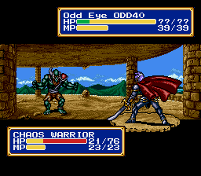
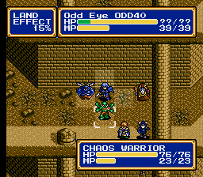
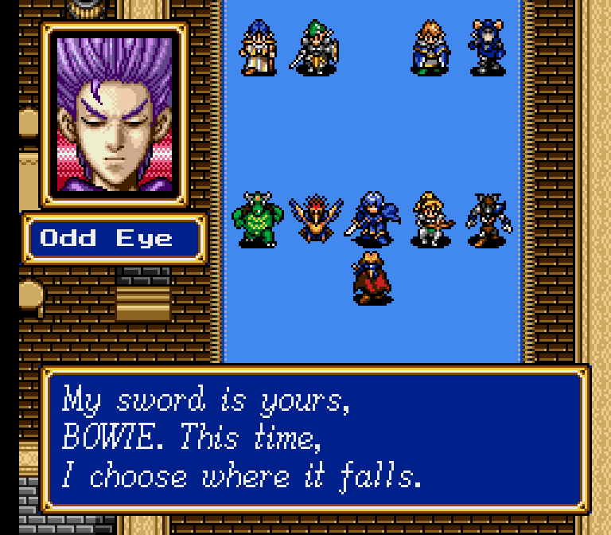

Home › Shining Force II › Odd Eye Redemption
Odd Eye Redemption
Shining Force II · Version 1.0
Oddler travelled with the Force. I wanted him to have a chance to come back.
In this version of Shining Force II, Odd Eye survives his defeat. Zeon's hold breaks, he remembers the people who once took him in, and he asks Bowie to let him fight beside them. He joins the Force, and Astral opens the party menu so you can give him a place in the next battle.
Late-game story spoilers below. This is an alternate story written for the mod, rather than a restoration of cut content.

A place in the Force
The death scene becomes a new conversation with Bowie, Peter, Astral and Lemon. Odd Eye joins as the 31st recruit. All thirty original characters remain available, and the battle party still holds twelve.
He arrives at promoted level 25, with six movement and the Counter Sword already equipped. His HP, MP, defence and agility follow Bowie's HERO growth model. His base attack follows the same curve with ten extra points; the sword adds its normal 39 ATT on top.
Level-up randomness still applies. His numbers are not copied from your particular Bowie, whose promotion level and stat-boosting items may differ.
Laser Eye
Choose LASER from the magic menu. It costs 8 MP, reaches a target one to three tiles away, and hits the centre tile plus its four neighbours: up to five opponents.
Each target takes 20–30 damage, rolled separately. Weapons, promotion bonuses and elemental resistance do not change that range. The beam is a deliberate spell choice, not a random extra sword attack. The enemy Odd Eye keeps his original spell.
Watch the sword attack in-game

Recorded in the emulator. Collapse this panel to hide the animation.
How to play
- Use a clean, headerless Shining Force II (USA) ROM. Check it against the details below.
- Apply
odd-eye-redemption-v1.0.bpsto the original ROM with a BPS-compatible patcher. - Open the resulting ROM in an emulator that supports 4 MB Mega Drive ROMs and 64 KB SRAM. Development testing used Genesis Plus GX.
- Start a new game and play through to the battle against Odd Eye. Win to recruit him at promoted level 25. Original-game saves are incompatible with this expanded build, and emulator save states from earlier builds must not be loaded.
Source size: 2,097,152 bytes
MD5: 6473b1505334ef5620d13191c18251fe
The download contains only the BPS patch. You must supply your own original ROM.
After he joins
Odd Eye has his own place at headquarters, with different dialogue when he is in the battle party or waiting in reserve. You can bring him along for the remaining battles against Zeon's forces.
He also appears in the final castle scene. A short exchange with Peter gives him a moment to reflect on the life he has chosen, while keeping Bowie's and Elis's ending intact.

Release notes
Version 1.0 includes recruitment, party management, headquarters dialogue and an epilogue, alongside the playable battle sprites and rebalanced Laser Eye.
Emulator checks cover recruitment at level 25, the final battles' victory sequences, the castle ending, saving and loading, and the combat changes. These include controlled tests that clear enemy HP to check story progression; they are not a full campaign played from start to finish.
If you find a problem, send me the version, emulator and steps to reproduce it. A screenshot or an in-game save can help.
Credits
Original game: Sega and Sonic! Software Planning. The build uses ShiningForceCentral's SF2DISASM and its expanded engine.
Battle artwork comes from the Odd Eye sprite sheet hosted on SFMods, adapted for this mod. The linked attachment does not identify the artist. The portrait and map sprite are from the original game.
Mod concept and direction: Creed's Mansion. Code, earlier sprite prototyping and local edits to the idle poses were developed with AI assistance.